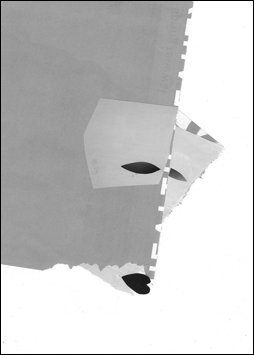

Flow backward to your sources, sacred rivers . . .
—Euripides,Medea
Quite by accident (who knows where they come from) a collage jumps up out of a pile of torn papers. But something is missing—ah, yes: eyes. Add them and it becomes a face. But whose? Why, Lady Ise's, of course, it's axiomatic. First, make lips: they're easy—two arcs of the scissors andvoilà, Beaujolais red and kissable.
I cut the eyes freehand with a razor knife: courtly, furtive, smoke grey. Once laid down on the image, the fun begins: placed too high and she forfeits beauty. Crowd them too closely and nobility evaporates, not to mention her fierce intelligence. Twenty different placements give you twenty different temperaments. I let the whole thing gel awhile under a pane of glass . . . but she keeps insisting that I finish her. Lovers you didn't want,
children you didn't plan for,
sad, sad Lady Ise,
look up from the centuries:
nothing's changed— The eyes are finished, angled only slightly, elegant, a bit sad, though still defiant. Now she wants hair! Brushed or pasted, darling, up in a bun or waterfalling those thin and weary shoulders?
But I'm not going to give you hair because nearly everyone will have already imagined it long and shiny and crow's wing black . . . and also, Milady, because the mask of your poetry is what you preferred we see. For the Sixth Month
it seems, my grief
only accumulates—
of what use cleansing
stains that never fade?
Lady Ise (c. 877-940 ME)*
*Author's version |